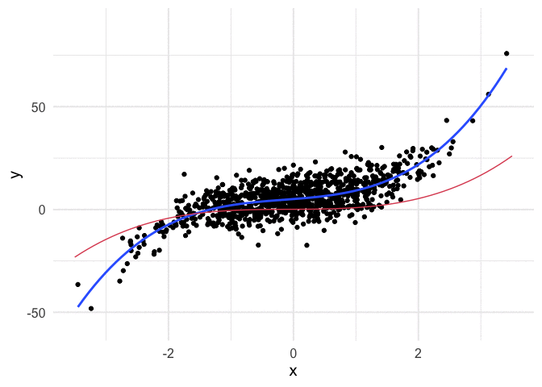
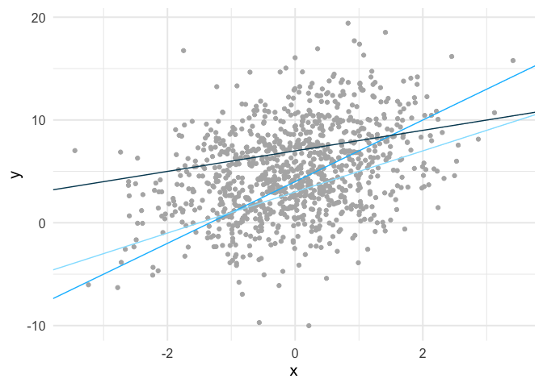
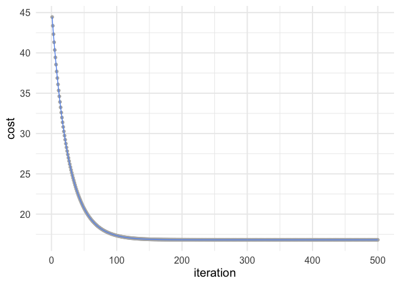
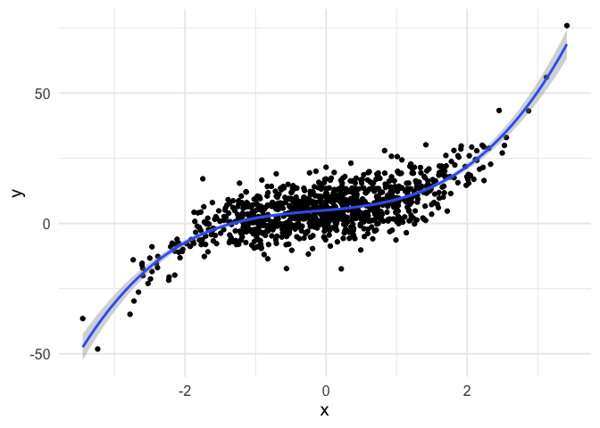

Exploring Gradient Descent
Contents
tl;dr
I’ve recently learned a lot about gradient descent, and wanted to share here. I used gradient descent to estimate linear regression models and, by the end, produce gifs like this, showing how the algorithm learns!

Intro
This term I’m co-teaching an applied machine learning course in R using the {tidymodels} suite of packages. It’s been a great experience because it’s allowed me to dig into topics more deeply than I have previously, and it’s definitely helped me learn and understand the tidymodels infrastructure better.
I’ll be discussing boosted trees in that class soon, and that allowed me to dig into gradient descent (the optimization algorithm used in boosted trees) at a deeper level than I have previously. So in this post, I wanted to share some of my exploration. I worked through this in a familiar framework - simple linear regression
Exploring candidate fits
Gradient descent is an iterative search algorithm that seeks to find the global minimum of a cost function. What does that mean? Well, first, we have to define a cost function. In linear regression, this is usually the mean squared error, which is defined as
$$ \frac{1}{N} \sum_{i=1}^{n} (y_i - (a + bx_i ))^2 $$
All this means is that we fit a line through a cloud of data, calculate the distance from each point to the line, square all of these values (because some are positive and others are negative and their sum will be zero otherwise) and then take the mean of these squared values. So it’s just a summary statistic indicating how far “off” our model is from the observed values. This is, hopefully pretty clearly, a statistic that you want to minimize.
In the case of simple linear regression, there are infinite lines we could fit through the data. Below is an example of three such lines fit to some simulated data.

We can calculate the mean square error for each of these lines. The mean square error for the light blue line is 21.61, the slightly darker blue line is 20.72, and the darkest blue line is 20.67. So among these three candidate lines, the one that is closest to the observed values, on average, is the darkest line.
Finding the optimal fit
So using our cost function, we know which of these three lines provides the best fit (minimizes errors) to the data. But these are just three of an infinite number of lines. How do we find what is best? Well, in this case we’d just use ordinary least squares. In other words, this problem is simple enough that some very smart people figured out a very long time ago how to directly estimate the line that minimizes the sum of the squared errors. But what if we didn’t have a closed-form solution? That’s where gradient descent can help.
First, let’s look at the cost surface. What you see below is the mean square error estimate for a wide range of possible combinations for our two parameters in the model, the intercept (line value when x = 0) and the slope (steepness of the line).

Code for generating the above image is available here
Gradient descent starts at a random location on this cost surface, evaluates the gradient, and takes a step (iteration) in the direction of steepest descent. The size of this step is called the learning rate, and it controls how quickly the algorithm moves. Too small of a learning rate, and the algorithm will take a very long time to estimate. Too large, and it may skip past the global minimum.
Estimating the gradient
To estimate our gradient, we take the partial derivative of our cost function for each parameter we are estimating. In simple linear regression, this amounts to
$$
\begin{bmatrix}
\frac{d}{da}\\
\frac{d}{db}\\
\end{bmatrix} =
\begin{bmatrix}
\frac{1}{N} \sum -2(y_i - (a + bx_i)) \\
\frac{1}{N} \sum -2x_i(y_i - (a + bx_i)) \\
\end{bmatrix}
$$
or in R code
gradient_descent <- function(x, y, a, b, learning_rate) {
# number of observations
n <- length(y)
# predictions for candidate parameter estimates
yhat <- a + (b * x)
# errors
resid <- y - yhat
# Estimate partial derivatives
a_deriv <- (1/n) * sum(-2 * resid)
b_deriv <- (1/n) * sum(-2 * x * resid)
# multiply by the learning rate
a_step <- a_deriv * learning_rate
b_step <- b_deriv * learning_rate
# update parameters, taking a step down the gradient
a_update <- a - a_step
b_update <- b - b_step
# Return updated parameter estimates
c(a_update, b_update)
}
Let’s now simulate some data and play with it. The code below generates the exact same data displayed in the scatterplot above.
set.seed(8675309)
n <- 1000
x <- rnorm(n)
a <- 5
b <- 1.3
e <- 4
y <- a + b*x + rnorm(n, sd = e)
We now have “known” parameters - the intercept is five and the slope is 1.3. We can estimate these parameters with ordinary least squares with
coef(lm(y ~ x))
## (Intercept) x
## 5.092374 1.413514
and as you can see, they are very close.
Let’s try the same thing with gradient descent. First, set the parameters to arbitrary values. We’ll use a fairly standard learning rate of 0.1.
pars <- gradient_descent(x, y, 0, 0, 0.1)
pars
## [1] 1.0109553 0.2681521
So after one iteration our algorithm has moved the intercept value up to 1.01 and the slope up to 0.27, both of which appear to be heading in the right direction. If you run the code below over and over again you can “watch” the parameters move toward their optimal estimates, given the sample (i.e., the same values they were estimated at with ordinary least squares).
pars <- gradient_descent(x, y, pars[1], pars[2], 0.1)
pars
## [1] 1.8211460 0.4856731
After a fairly low number of iterations, the estimates become indistinguishable.
Automate the estimation
We can automate the estimation with a loop, and this time we’ll store the mean square error at each iteration as well.
mse <- function(x, y, a, b) {
pred <- a + b*x
resid2 <- (y - pred)^2
1/length(y)*sum(resid2)
}
estimate_gradient <- function(x, y, a, b, learning_rate, iter) {
pars <- gradient_descent(x, y, a, b, learning_rate)
c(iter, pars[1], pars[2], mse(x, y, a, b))
}
# number of iterations
iter <- 500
# set up empty data frame
estimates <- data.frame(iteration = integer(iter),
intercept = double(iter),
slope = double(iter),
cost = double(iter))
# store first row of estimates
estimates[1, ] <- estimate_gradient(x, y, 0, 0, 0.01, 1)
# Estimate remaining rows, using previous row as input
for(i in 2:iter) {
estimates[i, ] <- estimate_gradient(x, y,
a = estimates$intercept[i - 1],
b = estimates$slope[i - 1],
learning_rate = 0.01,
iter = i)
}
head(estimates)
## iteration intercept slope cost
## 1 1 0.1010955 0.02681521 44.44593
## 2 2 0.2001834 0.05312412 43.36282
## 3 3 0.2973035 0.07893621 42.32217
## 4 4 0.3924950 0.10426083 41.32230
## 5 5 0.4857961 0.12910714 40.36163
## 6 6 0.5772444 0.15348411 39.43861
You can see the cost going down at each iteration. Let’s visualize how the mean square error changes.
ggplot(estimates, aes(iteration, cost)) +
geom_point(color = "gray70") +
geom_line(color = "cornflowerblue")

So you can see after about 150 iterations or so we’re not getting much improvement.
Animating the learning
Working through the above was really helpful for me, but I also think it can be helpful to see the algorithm work. Thanks to {gganimate}, it’s pretty simple to produce nice visuals. The code below produces an animation of the line starting at our random values (intercept and slope of zero) and working it’s way toward the value that minimizes our cost function.
library(gganimate)
ggplot(estimates) +
geom_point(aes(x, y), sim_d) +
geom_smooth(aes(x, y), sim_d,
method = "lm", se = FALSE) +
geom_abline(aes(intercept = intercept,
slope = slope),
color = "#de4f60",
size = 1.2) +
transition_manual(frames = iteration)

I think my favorite thing about this visual is how you can watch the line slow down as it gets closer to the global minimum. This happens because the gradient is not as steep. So even though it’s still going downhill, it’s not traveling as far with each step.
Example with polynomial regression
To push my understanding a bit further, I tried to replicate the same thing with polynomial regression. Below is the code and resulting animation. As you can see, the process is essentially the same, but it’s kind of neat to watch something other than a straight line converge.
# simulate data from a cubic model
set.seed(8675309)
n <- 1000
x <- rnorm(n)
a <- 5
b1 <- 2.3
b2 <- 0.5
b3 <- 1.2
e <- 6
y <- a + b1*x + b2*x^2 + b3*x^3 + rnorm(n, sd = e)
# View ordinary least squares fit
tibble(x, y) %>%
ggplot(aes(x, y)) +
geom_point() +
geom_smooth(method = "lm", formula = y ~ poly(x, 3))

# Define new gradient descent function, with all parameters
gd <- function(x1, x2, x3, y, a, b1, b2, b3, learning_rate) {
n <- length(y)
yhat <- a + (b1 * x1) + (b2 * x2) + (b3 * x3)
resid <- y - yhat
# update theta
a_update <- a - ((1/n) * sum(-2*resid)) * learning_rate
b1_update <- b1 - ((1/n) * sum(-2*x1*resid)) * learning_rate
b2_update <- b2 - ((1/n) * sum(-2*x2*resid)) * learning_rate
b3_update <- b3 - ((1/n) * sum(-2*x3*resid)) * learning_rate
# Return updated parameter estimates
c(a_update, b1_update, b2_update, b3_update)
}
# New mean square error function
mse <- function(x1, x2, x3, y, a, b1, b2, b3) {
pred <- a + (b1 * x1) + (b2 * x2) + (b3 * x3)
resid2 <- (y - pred)^2
1/length(y)*sum(resid2)
}
# New gradient estimation
estimate_gradient <- function(x1, x2, x3, y, a, b1, b2, b3, learning_rate, iter) {
pars <- gd(x1, x2, x3, y, a, b1, b2, b3, learning_rate)
c(iter, pars[1], pars[2], pars[3], pars[4],
mse(x1, x2, x3, y, a, b1, b2, b3))
}
# Number of iterations
iter <- 500
# set up empty data frame
estimates <- data.frame(iteration = integer(iter),
intercept = double(iter),
b1 = double(iter),
b2 = double(iter),
b3 = double(iter),
cost = double(iter))
# store first row of estimates
estimates[1, ] <- estimate_gradient(x, x^2, x^3, y,
a = 0, b1 = 0, b2 = 0, b3 = 0,
learning_rate = 0.01, 1)
# Estimate remain rows, using previous row as input
for(i in 2:iter) {
estimates[i, ] <- estimate_gradient(x, x^2, x^3, y,
a = estimates$intercept[i - 1],
b1 = estimates$b1[i - 1],
b2 = estimates$b2[i - 1],
b3 = estimates$b3[i - 1],
learning_rate = 0.01,
iter = i)
}
# Create a new data frame to make predictions on (for plotting)
pred_frame <- tibble(x = seq(-3.5, 3.5, 0.1),
x2 = x^2,
x3 = x^3)
# Predictions over pred_frame values
compute_pred <- function(a, b1, b2, b3) {
pred <- a + b1*pred_frame$x + b2*pred_frame$x2 + b3*pred_frame$x3
tibble(x = pred_frame$x, pred)
}
# Create all predictions
predictions <- estimates %>%
group_by(iteration) %>%
nest() %>%
mutate(pred = map(data, ~compute_pred(.x$intercept, .x$b1, .x$b2, .x$b3))) %>%
select(iteration, pred) %>%
unnest(pred)
# Bind two-dimensional data together (for plotting)
sim_d <- tibble(x, y)
# Animate
ggplot(predictions) +
geom_point(aes(x, y), sim_d) +
geom_smooth(aes(x, y), sim_d,
method = "lm",
formula = y ~ poly(x, 3),
se = FALSE) +
geom_line(aes(x = x, y = pred, group = iteration),
color = "#de4f60",
size = 1.2) +
transition_manual(frames = iteration)
Things could be perhaps cleaned up a bit in the above by using matrix algebra, so we don’t have to keep writing new lines of code with each new parameter, but I actually found writing out each step to be a bit more clear, at least for me.
So that’s it for now. Hope you enjoyed it! Please get in touch with me if you’d like to chat more (contact info at the bottom).
Author Daniel Anderson
LastMod 2020-05-22